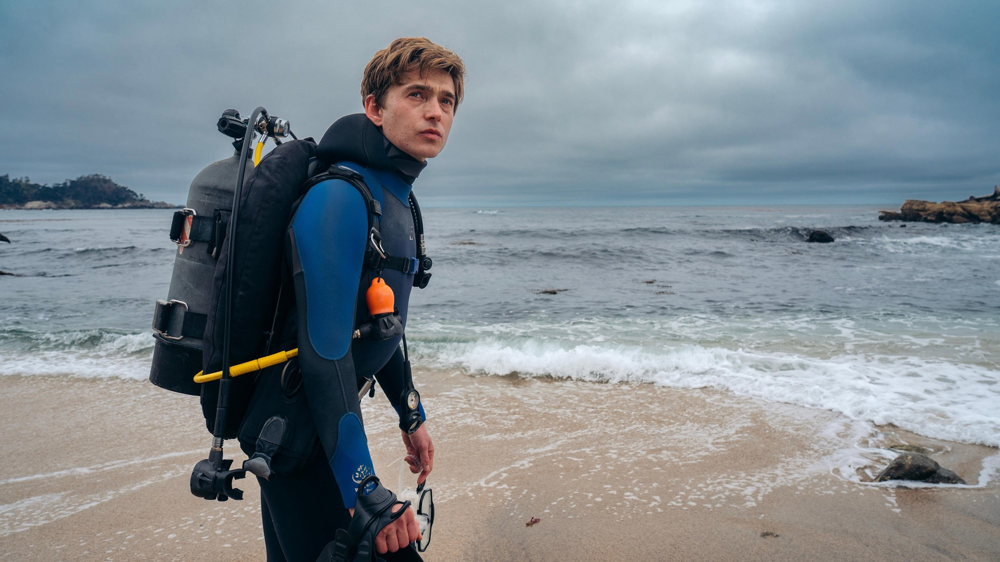
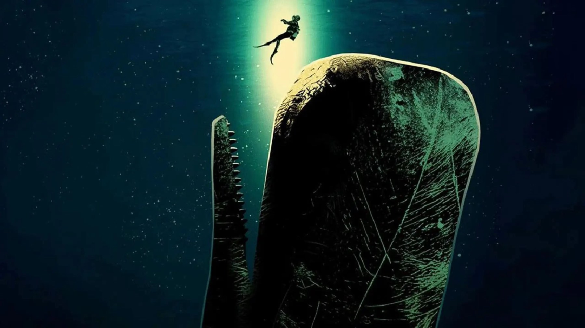

Whalefall: quando esce, trama, cast e cosa sappiamo
Dal 15 ottobre in sala il thriller di sopravvivenza di Brian Duffield: un sub inghiottito da un capodoglio, un'ora di ossigeno e il romanzo di Daniel Kraus
Un ragazzo, un capodoglio e un'ora d'aria. Il 15 ottobre 2026 Whalefall - Nella balena arriva nelle sale italiane con 20th Century Studios, e la premessa è così netta da non richiedere spiegazioni: un sub viene inghiottito intero da un cetaceo e deve trovare il modo di uscire prima che l'ossigeno finisca. La regia è di Brian Duffield, che firma anche la sceneggiatura insieme a Daniel Kraus, autore del romanzo da cui il film è tratto.
La trama: un'immersione per ritrovare il padre
Secondo la sinossi riportata da Sorrisi.com, Jay Gardiner si tuffa al largo della costa centrale della California dopo la morte del padre, con l'intenzione di recuperarne i resti. Sott'acqua incontra un enorme capodoglio impegnato a catturare un calamaro gigante e viene inghiottito. Intrappolato nel ventre dell'animale, ha a disposizione un'ora di ossigeno, e deve capire se gli insegnamenti ricevuti con fatica dal padre possono diventare la chiave per salvarsi.
Non ci sono ancora recensioni, quindi qui non troverai giudizi sul film: ti raccontiamo solo ciò che le fonti permettono di dire. Il conto alla rovescia dell'ossigeno è però già un indizio sulla struttura: un thriller a tempo, con una parte emotiva (il rapporto tra Jay e il padre) intrecciata a quella fisica della sopravvivenza.

Il cast: da Austin Abrams a Josh Brolin
Jay ha il volto di Austin Abrams, che Sorrisi.com ricorda per Euphoria. Josh Brolin interpreta il padre, Mitt Gardiner, ed Elisabeth Shue la madre, Zara. Nel cast ci sono anche John Ortiz, Jane Levy ed Emily Rudd, secondo Wikipedia.
Abrams e Brolin si sono già incrociati sullo schermo: li abbiamo visti insieme in Weapons, l'horror di Zach Cregger di cui trovi la nostra recensione sul sito. Qui i ruoli si invertono: non più comprimari di un racconto corale, ma un figlio e un padre al centro di tutta la storia. Chi segue Abrams da Euphoria può recuperare anche la nostra pagina sulla terza stagione della serie.
Il regista e il romanzo: perché la premessa sembrava impossibile da portare in sala
Brian Duffield ha scritto, ma non diretto, Insurgent (2015), The Babysitter (2017), Underwater e Love and Monsters (entrambi del 2020). Come regista e sceneggiatore ha firmato Spontaneous (2020) e No One Will Save You (2023), uscito direttamente in streaming; Whalefall è il suo terzo film da autore completo, secondo Wikipedia. Il passaggio da due storie di genere molto diverse a un thriller marino con un solo personaggio sullo schermo per gran parte del tempo è una scommessa.
Il romanzo di Daniel Kraus è uscito nell'agosto 2023 per MTV Entertainment Books, in 336 pagine. Il New York Times lo ha inserito tra i migliori thriller del 2023: Sarah Lyall lo ha definito «un'avventura a tempo, folle e divertentissima, su padri, figli, sensi di colpa e misteri del mare». Il libro ha vinto un Alex Award nel 2024 ed è stato finalista al Los Angeles Times Book Prize per la narrativa fantastica. Per BestMovie la storia era considerata «impossibile da adattare» per l'assurdità della premessa e per la seconda metà del libro, fatta di sequenze surreali e allucinate mentre il tempo di Jay si esaurisce.
Dalle riprese alle sale: il percorso del film
Secondo Wikipedia, le riprese principali sono cominciate il 9 giugno 2025 a Los Angeles, con scene girate anche sulla penisola di Monterey, e il film ha ottenuto crediti d'imposta dalla California. La musica è di Joseph Trapanese, la fotografia di Aaron Morton e il montaggio di Pietro Scalia. A produrre è Imagine Entertainment di Brian Grazer. Il primo teaser è uscito il 9 giugno 2026, secondo BestMovie.
Sempre secondo Wikipedia, il film arriva a Londra il 5 ottobre 2026, passa dal Sitges Film Festival e dal Festival di Roma e poi debutta nelle sale statunitensi il 16 ottobre, con 20th Century Studios. In Italia, come detto, la data è il 15 ottobre. Non abbiamo ancora trovato reazioni di critica o di pubblico con una firma e una testata che possiamo citare, e preferiamo non anticiparle.
Perché si aspetta questo film
Il primo motivo è la forza dell'idea: un film che si spiega in una frase e si ricorda dal primo trailer. Il secondo è il libro, amato dalla critica e dai lettori, che non dava affatto per scontata la trasposizione. Il terzo è Duffield, che con questo progetto passa da storie di mostri e fantascienza a un dramma sul rapporto con il padre, ambientato quasi interamente in un unico, claustrofobico spazio.
A chi potrebbe piacere
A chi cerca un thriller di sopravvivenza che punta sulla tensione e su un'idea forte, e a chi ha letto il romanzo e vuole vedere come è stato trasformato in immagini. Potrebbe incuriosire anche chi ama i film con un solo protagonista in una situazione estrema. Se invece sei sensibile ai temi del lutto o agli spazi chiusi, tieni conto che la premessa unisce entrambi.
Quando il film sarà uscito scriveremo la recensione e ti diremo se l'immersione riesce. Fino ad allora vale la pena guardare il trailer e segnare la data: il 15 ottobre, in sala.
Domande frequenti
Quando esce Whalefall in Italia?
Il 15 ottobre 2026 nei cinema, secondo Sorrisi.com, con 20th Century Studios. Negli Stati Uniti l'uscita è fissata il giorno dopo, il 16 ottobre, secondo Wikipedia.
Dove si vedrà Whalefall?
Prima di tutto in sala. Per streaming o noleggio in Italia non c'è ancora una data comunicata: la aggiungeremo quando arriverà.
Chi c'è nel cast di Whalefall?
Austin Abrams è il protagonista Jay Gardiner e Josh Brolin è suo padre Mitt. Con loro Elisabeth Shue, John Ortiz, Jane Levy ed Emily Rudd.
Whalefall è tratto da un libro?
Sì, dall'omonimo romanzo di Daniel Kraus, pubblicato nell'agosto 2023. Kraus ha scritto la sceneggiatura insieme al regista Brian Duffield.